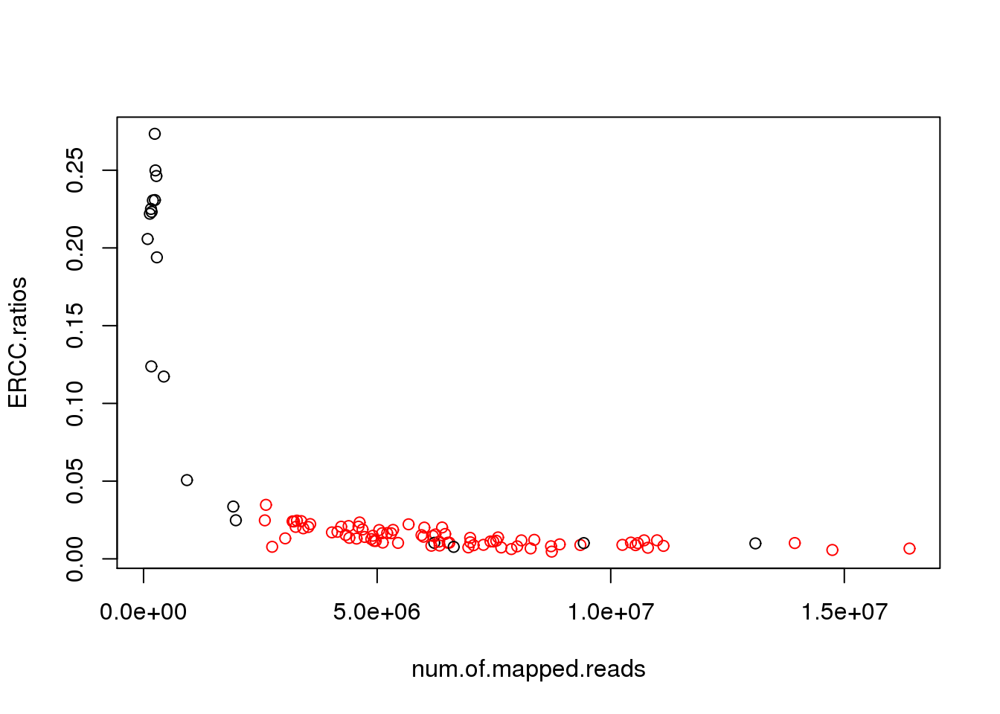
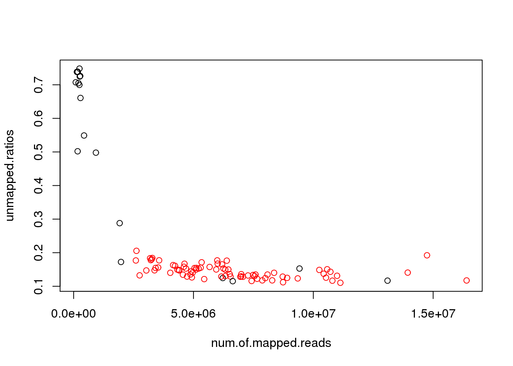
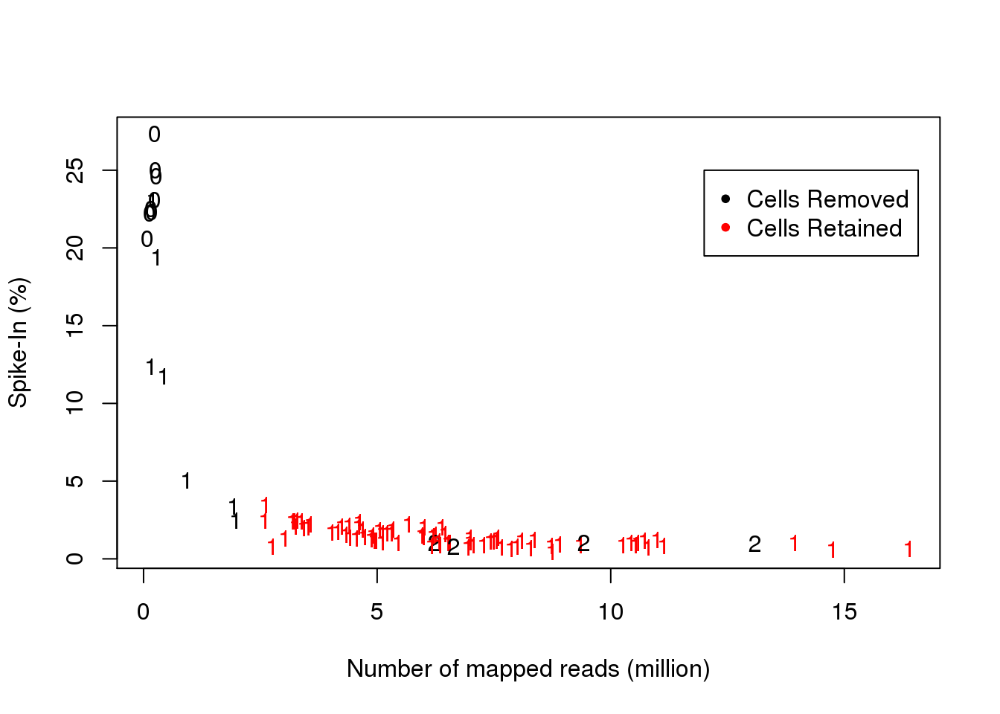
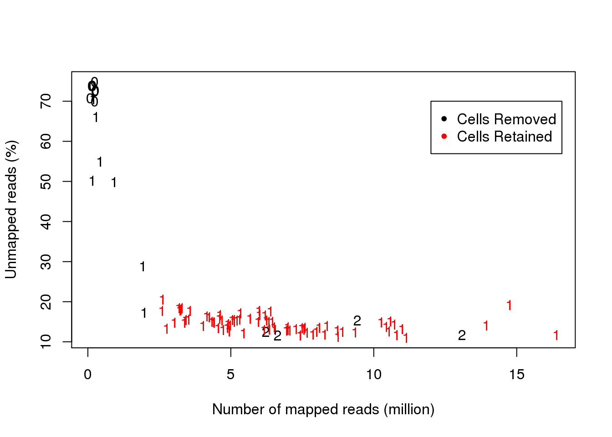
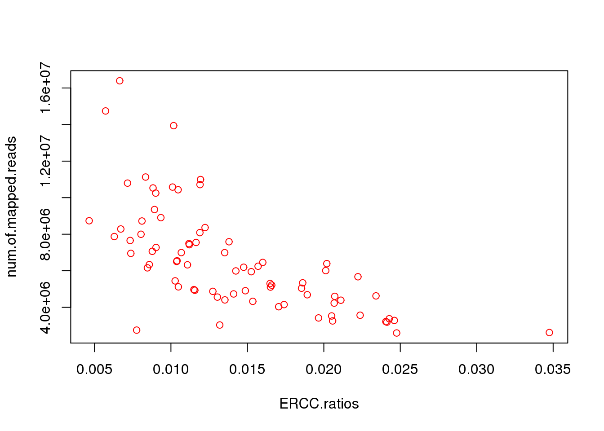

Last updated: 2015-05-18
Code version: d6e7e4826688a6225653e6ed572bd3d8600ed4ec
This is the QC of cell/library by looking at the number of cell captured in each well, the ERCC ratio, the number of unmapped reads, and the number of mapped reads. Higher ERCC ratio indicates that the RNA amount from the cell is lower, which migh be caused by cell death. The higher number of unmapped reads indicates lower quality of library preparation.
##### list all the files
wanted.files <- list.files(path="/mnt/gluster/home/ptung/test/ERCC/", pattern= "[0-9].counts.txt.summary")
##### get info you need
all.tables <- lapply(wanted.files,function(x){
read.table(paste("/mnt/gluster/home/ptung/test/ERCC/",x,sep=""),header=TRUE)[c(1,4,5),]
})
#### create ERCC ratios
ERCC.ratios <- lapply(all.tables,function(x){
x[1,2]/(sum(x[,2]))
})
ERCC.ratios <- unlist(ERCC.ratios)
#### create unmapped ratios
unmapped.ratios <- lapply(all.tables,function(x){
x[3,2]/(sum(x[,2]))
})
unmapped.ratios <- unlist(unmapped.ratios)
##### create number of mapped reads
num.of.mapped.reads <- lapply(all.tables,function(x){
(sum(x[,2]))-x[3,2]
})
num.of.mapped.reads <- unlist(num.of.mapped.reads)
##### create the table with all into
data1 <- data.frame(wanted.files,ERCC.ratios,unmapped.ratios,num.of.mapped.reads)
##### remove 4 individual cells
data1 <- data1[(data1$num.of.mapped.reads < 50000000),]
##### cell number capture on C1
data.cell.num <- read.csv("/mnt/gluster/home/ptung/LCL/cell_number.csv")
data1 <- data.frame(data1,data.cell.num)
##### QC cell number
index.c <- data1$cell.num == 1
##### QC mapped reads
index1 <- (data1[,"num.of.mapped.reads"] > 2500000)
sum(index1)[1] 81##### QC ERCC ratios
index2 <- (data1[,"ERCC.ratios"] < 0.05)
sum(index2)[1] 83##### QC unmapped ratios
index3 <- (data1[,"unmapped.ratios"] < 0.3)
sum(index3)[1] 83##### QC final ( | or, & and)
index.final <- index1 & index2 & index3 & index.c
index.final [1] TRUE TRUE FALSE FALSE TRUE TRUE TRUE FALSE TRUE TRUE TRUE
[12] TRUE TRUE TRUE TRUE TRUE FALSE TRUE FALSE FALSE TRUE TRUE
[23] TRUE TRUE FALSE TRUE TRUE FALSE TRUE TRUE TRUE TRUE TRUE
[34] TRUE TRUE TRUE TRUE TRUE TRUE FALSE TRUE TRUE TRUE TRUE
[45] TRUE TRUE TRUE TRUE TRUE TRUE TRUE TRUE TRUE TRUE TRUE
[56] TRUE TRUE FALSE TRUE TRUE TRUE TRUE FALSE TRUE TRUE FALSE
[67] TRUE TRUE TRUE TRUE TRUE TRUE TRUE FALSE FALSE TRUE TRUE
[78] TRUE TRUE TRUE FALSE TRUE TRUE TRUE TRUE TRUE TRUE TRUE
[89] FALSE TRUE FALSE TRUE TRUE FALSE TRUE FALSEsum(index.final)[1] 77####### keep the names of good cells
keep.cell <- data1$wanted.files[index.final]
######## plot cells with color coded
color.index <- as.numeric(index.final)+1
plot(data1[,c(4,2)],col=color.index)
plot(data1[,c(4,3)],col=color.index)
plot(data1[,4]/1000000,data1[,2]*100,col=color.index,pch=as.character(data1$cell.num),xlab="Number of mapped reads (million)",ylab="Spike-In (%)")
legend(12,25,c("Cells Removed","Cells Retained"),col=1:2,pch=20)
plot(data1[,4]/1000000,data1[,3]*100,col=color.index,pch=as.character(data1$cell.num),xlab="Number of mapped reads (million)",ylab="Unmapped reads (%)")
legend(12,70,c("Cells Removed","Cells Retained"),col=1:2,pch=20)
##### plot the good cells only
plot(data1[index.final,c(2,4)],pch=data1$cell.num[index.final],col=color.index[index.final])
sessionInfo()R version 3.1.1 (2014-07-10)
Platform: x86_64-unknown-linux-gnu (64-bit)
locale:
[1] LC_CTYPE=en_US.UTF-8 LC_NUMERIC=C
[3] LC_TIME=en_US.UTF-8 LC_COLLATE=en_US.UTF-8
[5] LC_MONETARY=en_US.UTF-8 LC_MESSAGES=en_US.UTF-8
[7] LC_PAPER=en_US.UTF-8 LC_NAME=C
[9] LC_ADDRESS=C LC_TELEPHONE=C
[11] LC_MEASUREMENT=en_US.UTF-8 LC_IDENTIFICATION=C
attached base packages:
[1] stats graphics grDevices utils datasets methods base
other attached packages:
[1] knitr_1.6
loaded via a namespace (and not attached):
[1] digest_0.6.4 evaluate_0.5.5 formatR_0.10 htmltools_0.2.6
[5] rmarkdown_0.5.1 stringr_0.6.2 tools_3.1.1 yaml_2.1.13